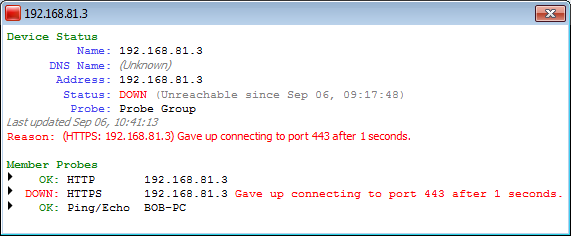
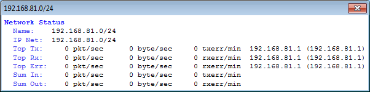
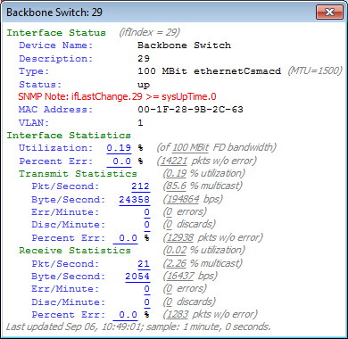

Viewing Status Windows
InterMapper
shows detailed
status about any item on a map (a device, a network, or a
link) in a Status window, as shown in the Device Status window below.

To view device, network, or link status:
-
Make sure your map is in Monitor mode (click the lock at the upper left of map window to lock the map, or press the Tab key.)
- Click and hold a device, network, or link on the map, or right-click the
device, network, or link, then choose Status Window. The Status window for the
selected device appears.
-
Release the mouse button to hide the Status window.
To keep a Status window open:
- Make sure your map is in Monitor mode.
- Click and hold the device, network, or link on the
map.
- Drag to a new location. As you drag, the
 cursor (Windows) or a transparent window appears.
cursor (Windows) or a transparent window appears.
- Release the mouse. You have "torn" the window off; it remains
open, located where you released the mouse.
Customizing a Status Window
If you are using a custom TCP or SNMP probe, you can override the default
contents of a Status window. For more information, see Custom Probes
and Customizing Status Windows in the Developer Guide.
Device Status Window
- Click and hold the mouse on a device to open its device status window, or right-click the device and choose Status Window.
- Click and drag to tear the window off and leave
it open.
-
Click the underlined Reset link to set Packet Loss to zero. This also resets
the device's availability measurement.
Note: The map must be in Edit mode to reset the Packet Loss value.
The window shows the device name, network address, device status, the probe
used to poll it, up-time (i.e., SNMP sysUptime, if available), availability
(the percentage of the time the device was available based on the number
of packets lost while testing), round-trip time (in msec), and spanning
tree status (if available).
When the device reports a problem, the reason for the most important error
is shown in red at the bottom of the Status window.
Network Status Window

- Click and hold the mouse on a network oval to open its network status
window, or right-click the network and choose Status Window..
- Click and drag to tear the window off and leave it open.
The network status window shows the network's IP address and subnet mask,
(if available) and information about the amount of traffic flowing on that network segment.
This data comes from all the SNMP devices attached to that network
oval.
- Top Tx - tells which device is transmitting the most data
- Top Rx - tells which device is receiving the most data
- Top Err - tells which device is
reporting the highest error rate for the link
- Sum In/Sum Out - the sum of all the transmitters and receivers
connected to that network.
Note:
The traffic statistic shown are only for devices connected
to this network that speak SNMP: Ping/Echo, or TCP-based devices (such as
HTTP, FTP, etc. probes) do not have this information and are ignored when
computing the sums and maximums displayed in the Status Window.
Link Status Window

- Click and hold the mouse on a link, or right click the link and choose Status Window. to open its link status window.
- Click and drag to tear the window off and leave it open.
The link status window shows the link's interface name and description,
its type (10 or 100 Mbps, 1.5 Mbps T-1, etc.), its status and up-time, its
IP and MAC addresses (when available), traffic statistics
(transmitted from and received by the interface), and the time since the
last poll.
Tip: Certain devices do not report their link speed accurately
in their SNMP responses. This causes InterMapper to report a value which
is not actually correct. To work around this, switch the map to Edit mode,
then right-click the link and choose Set Link Speed... The Set Link Speed window appears, allowing you to set Transmit and Receive speeds.